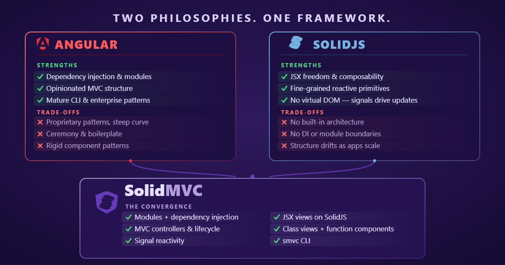

SolidMVC
Angular's architecture on Solid — modules, DI, class views, and worker-rendered islands, with the whole Solid ecosystem on tap.
import { Component, View, inject, signal, computed } from '@solid-mvc/core'; @Component() export class CounterView extends View { private session = inject(SessionService); count = signal(0); doubled = computed(() => this.count.value * 2); // render() runs once — JSX reads track the signal. render() { return ( <button onClick={() => this.count.value++}> count: {this.count.value} </button> ); } }
The convergence
Angular's architecture, Solid's freedom

The stack
One injector tree, class views on top
Everything Angular gave you — scoping, ownership, lifecycle — rebuilt around signals and JSX instead of decorators-era change detection.
Modules & DI
@Module composes providers across a hierarchical injector. inject() in field initializers resolves nearest-scope-first — Angular's resolution model, verbatim.
Class views
@Component + View: constructed once per mount in their own injector scope. No hooks, no deps arrays, no stale closures — render() is just code.
Controllers
@Controller classes own interaction state. Declaration decides lifetime: transient, view-scoped, or module-shared — the MVC layer Angular implied but never enforced.
Signals
signal/computed/effect with scope-bound disposal — effects created at construction die with the scope. Fine-grained updates, no manual unsubscribe.
Live
Two demo apps, same packages
Both mount from @solid-mvc/* by package name — the same
code the docs site documents and the test suite exercises.
Why SolidMVC
Structure without the template compiler
Angular's scoping
Module ownership is enforced at mount: declared components refuse to mount outside their injector scope. Architecture you can't drift away from.
Every Solid library
render() is ordinary Solid JSX — UI kits, control flow, TanStack Query Core, ECharts all drop in unchanged. Provide the client via DI; bridge subscribe into a signal.
Worker islands
The same View classes render inside Web Workers via @solid-mvc/atoll-island, streamed to the shell DOM over an op protocol.
Zero compiler magic
No template language, no AOT pass, no zone. Decorators attach metadata the runtime reads — the framework is ~5 small source files of DI and mount logic.
inject() replaces constructor metadata,
signals replace change detection, and worker islands push real UI off
the main thread. And because views render as ordinary Solid JSX,
the entire Solid ecosystem drops in unchanged. Declare the scope once, and the view
tree respects it.
Learn more
Want to dig in?
Docs
Quickstart, DI and modules, views and controllers, signals, the router, and the worker-islands guide — with live embedded demos.
./docs/ →Source & internals
The repo: packages, demo apps, and the internals docs — architecture map, DI invariants, and the islands op protocol.
github.com/jwhenry3/solid-mvc →npm
@solid-mvc/core for the framework, @solid-mvc/atoll + @solid-mvc/atoll-island for worker islands.